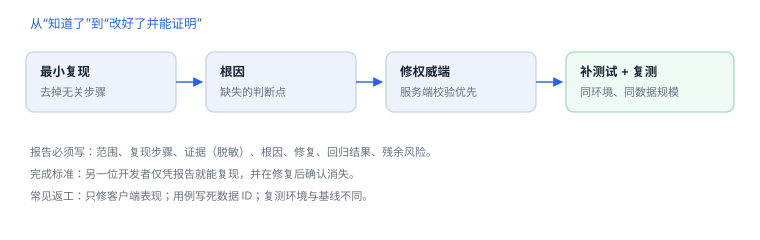

修复、回归与报告
修复要能被另一人复现验证，报告要能经受追问
发现的终点不是“知道了”，而是“改好了并且能证明”。把观察转成最小用例、定位根因、修复权威端、补回归测试，缺一步都会在下次发布时复发。
1. 修复闭环
- 最小复现：去掉无关步骤，保留能稳定触发的条件。
- 根因定位：区分“表层症状”和“缺失的判断”。例如越权读取的根因是缺少归属校验，不是客户端没隐藏按钮。
- 修权威端：服务端授权、输入校验优先；客户端只做体验适配。
- 补测试：覆盖失败路径与相邻场景，防止“修好这一个 ID”。
- 同环境复测：设备、版本、数据规模与基线一致。
- 记录残余风险：未修部分、影响范围、补偿控制。
2. 报告模板
| 栏目 | 内容 |
|---|---|
| 范围与授权 | 仓库、构建号、设备与系统、测试服务、禁止项 |
| 问题描述 | 一句话说明“谁在什么条件下能做什么” |
| 影响 | 资产、业务后果、影响版本与用户范围 |
| 复现步骤 | 编号步骤 + 预期 + 实际 |
| 证据 | 脱敏截图/日志片段/时间戳 |
| 根因 | 缺失的控制点，而非现象描述 |
| 修复与回归 | 改动摘要、测试结果、验证环境 |
| 残余与限制 | 未覆盖范围、依赖前提、后续计划 |

3. 完成标准
- 另一位开发者按报告能复现问题，并在修复后确认消失。
- 报告不含真实凭据、个人数据或非授权目标信息。
- 测试用例已进入回归集，不是一次性脚本。
4. 常见返工原因
- 只修客户端表现，服务端仍可被直接调用。
- 用例写死某个 ID，换数据就失效。
- 复测环境与基线不同，无法比较。
- 把推断写成结论，缺少证据支撑。
5. 练习：从发现到回归
- 挑一个前三个练习中的发现，写一份完整报告。
- 让同事只看报告复现一次，记录对方的卡点并修改报告。
- 把修复后的用例加入自动化回归，确认在 CI 中可运行。
6. 报告栏目：七项缺一不可
| 栏目 | 必填内容 |
|---|---|
| 范围 | 仓库、构建号、设备、测试服务 |
| 复现 | 编号步骤、预期、实际 |
| 修复 | 改动点、验证环境、回归结果 |
回归清单模板
- [ ] 用例已加入回归集
- [ ] 同一环境复测通过
- [ ] 相邻失败路径已覆盖
- [ ] 残余风险与责任人已记录修权威端
越权类问题的修复点是服务端的归属校验，客户端隐藏按钮只是体验。
越权类问题的修复点是服务端的归属校验，客户端隐藏按钮只是体验。
7. 常见错误：修复与回归
| 错误 | 后果 |
|---|---|
| 只改客户端表现 | 问题在服务端仍可复现 |
| 用例写死数据 ID | 换环境即失败 |
| 复测环境与基线不同 | 结论不可比 |
| 报告只写结论不写步骤 | 他人无法复现 |
8. 报告骨架
一页报告的六段
1 范围：对象、构建号、环境、时间窗
2 复现：编号步骤 + 预期 / 实际
3 证据：位置、命令、脱敏输出
4 根因：哪一处判断缺失
5 修复：改了哪里、为什么是权威端
6 回归：同环境复测结果 + 残余风险9. 自测
- “修权威端”在越权类问题中具体指什么？
- 为什么测试用例要避免写死具体数据 ID？
- 报告中的“残余风险”一栏为什么不能省略？